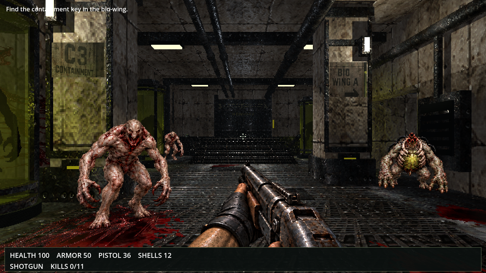
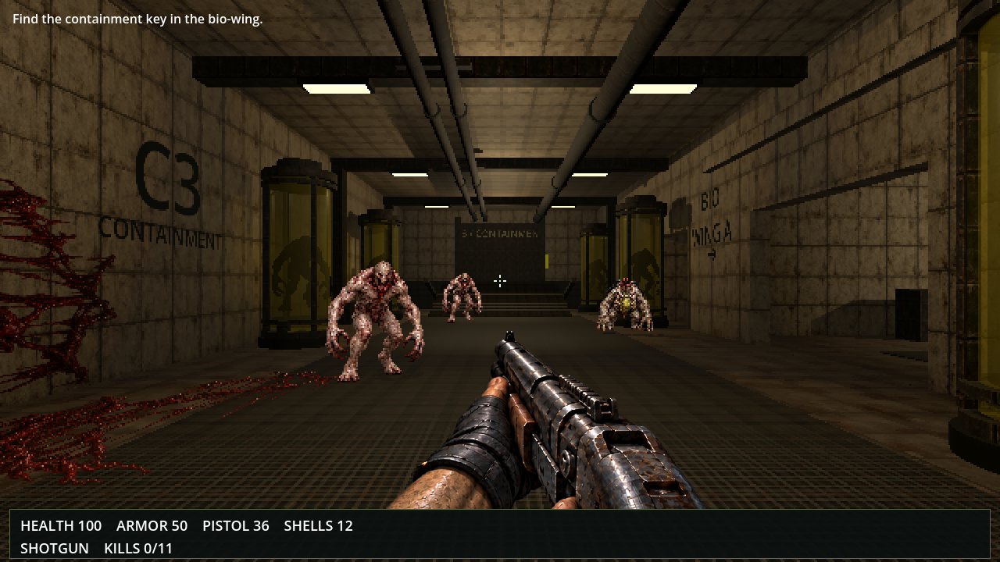
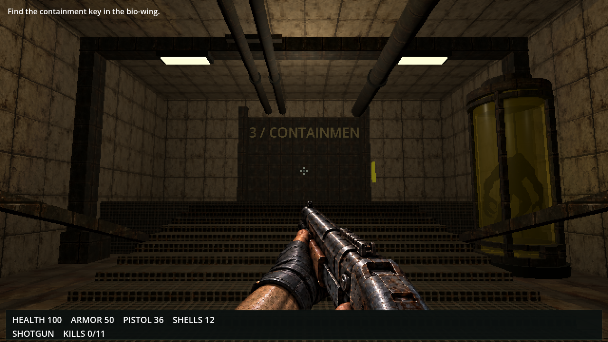

EYESORE / BUILD TWO / VISUAL COMPARISON
The approved target and the actual game
The approved Pale Ward concept is the specification for the painted and pixel texture identity. Polygon geometry is compatible with that requirement. These captures show the current implementation for review; they do not establish a visual match or approval.
All comparison frames have equal displayed dimensions and use nearest-neighbour scaling. Images retain their aspect ratio with no crop. Click an image to open its full original.
Approved target — concept artwork
Full approved thumbnail PNG · Full original concept scene PNG


Actual current game — native capture


No acceptance claim is made for the current game.
Older game — preserved native captures
Earlier implementation for comparison. These images are neither the approved target nor the current game.




Current captures — full originals
Every current native PNG remains available here, including when JavaScript is disabled.